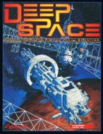

|  | Fiche technique |
| Supplément pour le jeu de rôles Cyberpunk 2020, édité par R. Talsorian Games (1993) | |
| Langue | Anglais |
| Thème | L'espace et la colonisation du système solaire |
| Qualité du background | 4 / 5 |
| Qualité des scénarii | 2 / 5 |
| Qualité des règles | 5 / 5 |
| Qualité des illustrations | 2 / 5 |
| Qualité de l'écriture | 4 / 5 |
Suite de Near Orbit et extrêmement bien documenté, ce supplément est une mine d'or pour faire voyager vos joueurs au delà du puit de gravité. Les règles sont conséquentes, la documentation sur le système solaire et les engins spatiaux est réaliste et complète. Enfin l'espace est à votre portée, et vous n'en ignorerez pas les risques. Petit bemol, les communautés spatiales ne sont pas très travaillées, ni le contenu des différentes stations. Ceci est laissé à l'appréciation du MJ. Néanmoins, ce supplément fournit la couche de base permettant de créer de magnifiques campagnes en orbite. On regrettera néanmoins qu'ils aient repris les illustrations de Near Orbit (beuh !) et que le scénario fourni soit un peu simplet. Ils auraient gagné à oublier le scénario et à le remplacer par la description complète et détaillée d'une base lunaire par exemple. Deep Space est malgré cela un très bon supplément.
{kind=link}